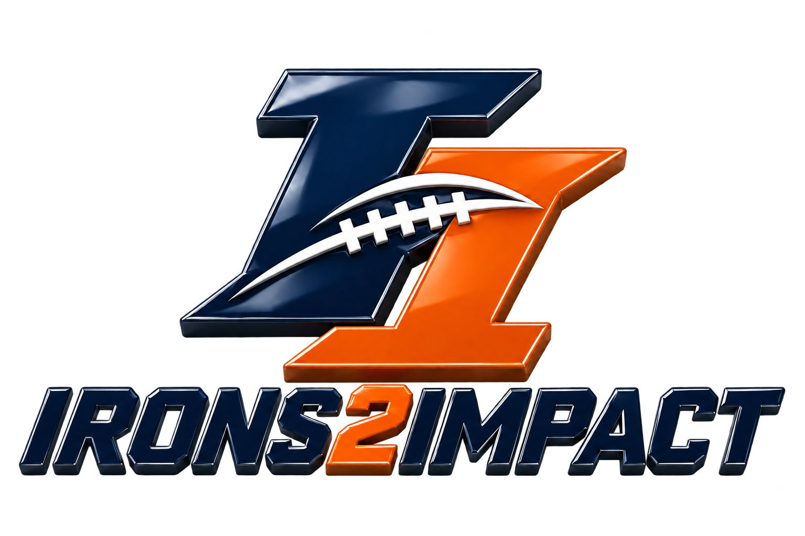
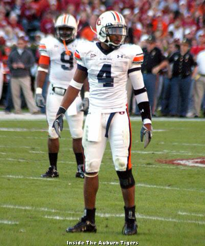

ATHLETE DEVELOPMENT • COLLEGE EXPOSURE • NIL

YOUR NEXT LEVEL STARTS HERE.
Build your game. Expand your opportunities. Make an impact.
MEET DAVID IRONS ↓MORE THAN A PROGRAMFIVE PATHWAYS.
FIVE PATHWAYS.
ONE STANDARD.
Support on the field, off the field, and in the moments that shape what comes next.
01COLLEGE
NIL &
COLLEGE
ELITE 7V7
SPEED &
COLLEGE
RECRUITING
Family recruiting support starting at $2,500. Profiles, film guidance, and coach outreach. No NIL deal required.
02NIL &
ENDORSEMENTS
Brand positioning, opportunity evaluation, and deal guidance.
03COLLEGE
EXPOSURE
A focused two-week recruiting and college introduction experience.
04ELITE 7V7
FOOTBALL
Compete, sharpen your game, and pursue high-level 7v7 opportunities.
05SPEED &
TRACK TRAINING
Develop acceleration, mechanics, speed, and competitive confidence.

MEET THE FOUNDEREXPERIENCE.
EXPERIENCE.
WITH PURPOSE.
David Irons brings his football experience to athlete development, recruiting preparation, and guidance for families.
Meet David Irons ↗View the photo gallery →FOR COLLEGE COACHESFIND YOUR NEXT
Find Athletes ↗FIND YOUR NEXT
IMPACT PLAYER.
Visit the recruiting hub to explore athletes and connect with David.